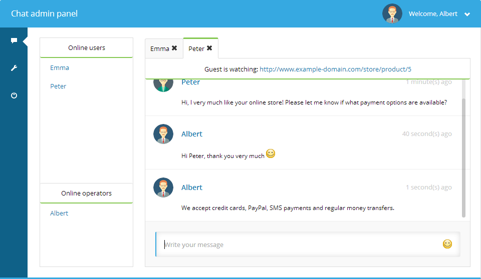

Los datos de la empresa están protegidos
Controle dónde se almacenan los archivos: sus servidores, sus nubes privadas.
ChatPuro es una herramienta de comunicación, a través del sitio web los usuarios se conectan con los operadores, con fin de aclarar, resolver o ampliar información relevante para el usuario. Después de estudiar el comportamiento de los sitios de nuestros clientes y descubrir que muchos de ellos recibían visitas únicas y reiteradas, implementamos una herramienta que aumentara la conversión de estas visitas, puesto que muchas de ellas solo requerían de información adicional personalizada para convertir en venta fácilmente.
Y como cubrir la demanda, con ChatPuro tienes operadores individuales y departamentos, para segmentar las soluciones que tus clientes requieran, con múltiples operadores en línea que conversan muchos visitantes al tiempo, además de la posibilidad de chatear entre operadores y departamentos. No hay excusa para no estar en línea.

 Para garantizar la usabilidad de nuestros sitios, empleamos tecnologías desarrollo como HTML5, así nuestros proyectos son ligeros y cargan más rápido en el navegador.
Para garantizar la usabilidad de nuestros sitios, empleamos tecnologías desarrollo como HTML5, así nuestros proyectos son ligeros y cargan más rápido en el navegador.
 Para nuestros clientes bloggers, y amantes de la edición de contenido, desarrollamos en wordpress un CMS, enfocado al contenido y sitios blog.
Para nuestros clientes bloggers, y amantes de la edición de contenido, desarrollamos en wordpress un CMS, enfocado al contenido y sitios blog.
 Para proyectos de edición mucho más robustos; dinámicos e integrados con diversas aplicaciones, carritos de compra etc; ofrecemos el CMS joomla, con fin de satisfacer la necesidades de nuestros clientes.
Para proyectos de edición mucho más robustos; dinámicos e integrados con diversas aplicaciones, carritos de compra etc; ofrecemos el CMS joomla, con fin de satisfacer la necesidades de nuestros clientes.
 Para proyectos de creación y gestión de comunidades, empleamos Drupal un CMS flexible y adaptable
Para proyectos de creación y gestión de comunidades, empleamos Drupal un CMS flexible y adaptable
 Empleamos una solución integral de fácil e intuitiva administración en nuestros proyectos de comercio electrónico, para garantizar a nuestros emprendedores un sitio convertible en ventas.
Empleamos una solución integral de fácil e intuitiva administración en nuestros proyectos de comercio electrónico, para garantizar a nuestros emprendedores un sitio convertible en ventas.
Plataforma de comercio electrónico robusta de un requerimiento técnico y administración mayor, empleada para proyectos de tipo personalizados y escalables.
El marketing es la disciplina que planea con anticipación el ¿Cómo? , ¿Por qué? ¿Cuándo? ¿Dónde? aumentar la demanda de un producto o marca, a través de una estrategia combina la relación Cliente-Producto-Conversión (venta).
El marketing digital, es en esencia marketing pero a través de todos los canales y medios electrónicos que el usuario utiliza, o al que está expuesto.
La estrategia digital se enfoca en el usuario en las oportunidades/posibilidades de interacción con el mismo, el canal digital permite una adecuada medición de los factores externos (competencia) e internos de las empresas, un DOFA pero con mayor alcance, lo maravilloso del marketing digital es que nos permite medir y actuar en tiempo real de acuerdo a las necesidades y tendencias de forma inmediata y por supuesto a un menor costo.
La inmensidad de datos, (tendencias localización, visitas, keywords, búsquedas, comunidades sociales) por supuesto ordenados y segmentados, permitirá definir el modelo adecuado de negocio.
Para esto existen muchas técnicas, pero para esto presentamos 3 productos básicos necesarios para impactar en el mundo digital con la estrategia correcta.
Controle dónde se almacenan los archivos: sus servidores, sus nubes privadas.
Tan fácil de usar como un software destinado al público en general, personalizado con el logotipo de su marca y sus colores de identidad.
Envíe correos electrónicos a un elevado número de trabajadores con una dirección URL y un enlace de descarga desde almacenes de aplicaciones.
Conectar con su directorio de la empresa. Escalable y de alta disponibilidad con sistemas de archivos distribuidos.
Sin necesidad de migrar datos: los datos empresariales existentes simplemente deben mapearse.
El termino SEO o (Search Engine Optimization), se refiere a la optimización en los motores de búsqueda, así que la optimización será en gran medida del contenido además de una infinidad de prácticas técnicas, como ubicaciones, presencia destaca en fuentes de información pero principalmente se basa en contenido relevante.
Muy sencillo piensa que el SEO es la ubicación espacial de tu local/oficina, si no es adecuado tus clientes no te van a visitar o posibles clientes no te van a encontrar. Ahora que es un poco más importante, piensa en tu web como tu oficina/local y el contenido eres tú, son tus vendedores, si un cliente quieres saber de tus productos, le vas a contestar lo que dice Wikipedia?, no verdad. Queremos que tenga siempre la mejor información de nuestro producto, que conozca las ventajas de contratar con nosotros, que entienda porque somos mejores y porque agregamos valor; como emprendedores sabemos lo importante que son nuestros productos para nuestros clientes, pero en la web simplemente no lo trasmitimos, porque no damos la verdadera importancia. Sabemos de nuestros producto pero es suficiente? No, es necesario un plan, una estrategia de contenido que compacte todo aquello que queremos transmitir con una redacción original, ligera e interesante para el usuario, optimizada para que buscadores como Google, Bing, Yahoo, Youtube, Twitter, Foursquare la encuentre fácilmente y posicione como información relevante…youtube, twitter, foursquare? Si. El usuario no se encuentra en un solo portal y busca información en muchas partes, conoce las fuentes de información y las frecuenta, por esto la importancia de un contenido llamativo optimizado que genere una presencia destacada en las diferentes fuentes de información.